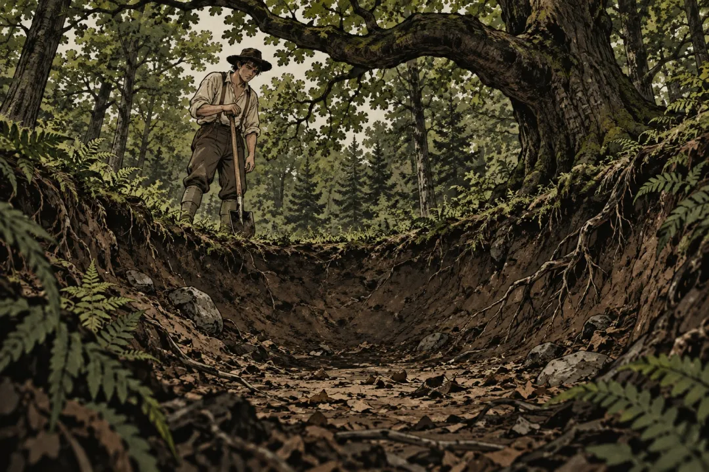

"200년 넘게 팠는데 나온 건 동전 한 닢, 그 사이 6명이 죽은 보물 구덩이"
1795년 여름, 숲속에 움푹 꺼진 땅이 있었음
캐나다 동쪽 끝 노바스코샤 앞바다에 작은 섬이 하나 있음. 이름은 오크 아일랜드.
전해지는 이야기는 이럼. 1795년 여름, 대니얼 맥기니스라는 청년이 이 섬에서 이상한 걸 발견함. 숲속 땅 한 군데가 둥글게 움푹 꺼져 있었음.
누가 파고 다시 덮은 자리 같았음.
맥기니스는 친구 둘을 데려와서 파기 시작함. 2피트쯤 파니까 납작한 돌들이 깔려 있었음. 계속 파 내려갔고, 30피트(약 9m)쯤에서 그만뒀다고 함.
여기서 짚고 갈 게 있음. 이 이야기를 1795년에 적어둔 기록은 없음. 처음 신문에 실린 게 1857년이고, 자세한 증언이 나온 건 1862년임. 60년 넘게 입에서 입으로 전해진 이야기라는 것.
그래도 이 구덩이는 지금까지 '머니 핏', 돈 구덩이라고 불림.

좋아요 24
댓글 12
리포스트 1
공유 0